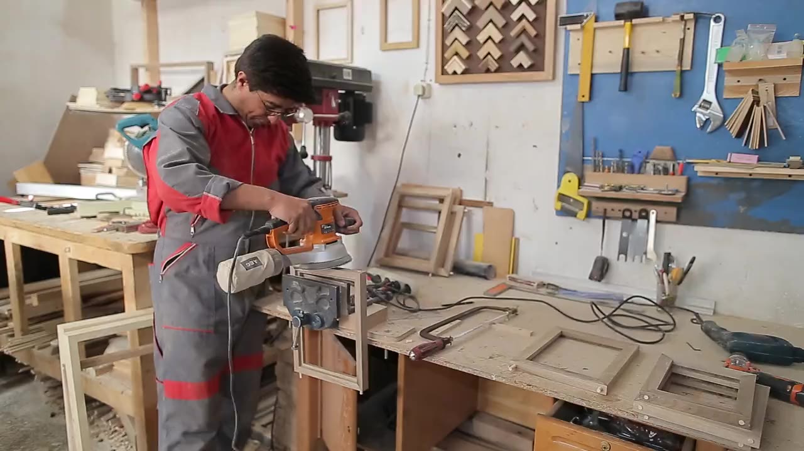

05 / BUILD WHAT COMES NEXT RECORDED SCENE
KAJERSETU / POSSIBILITY TAKES PRACTICE
Make something
of your skills.
Every skill opens a possibility. Explore sample roles and organise the preparation for your next chapter.
Explore sample rolesDEMO ONLY — fictional roles and employers. No real vacancies or applications are offered here.
কাজ খুঁজুন · Explore sample roles
Know what to verify
Use the Bangla/English job circular question guide to practise checking fictional roles. It is an offline FAQ, not live AI or a vacancy service.
Before applying
Verify a real opening on the employer’s original site. Do not share passwords, OTPs or bank details with recruiters.
Read Bdjobs’ applicant warnings